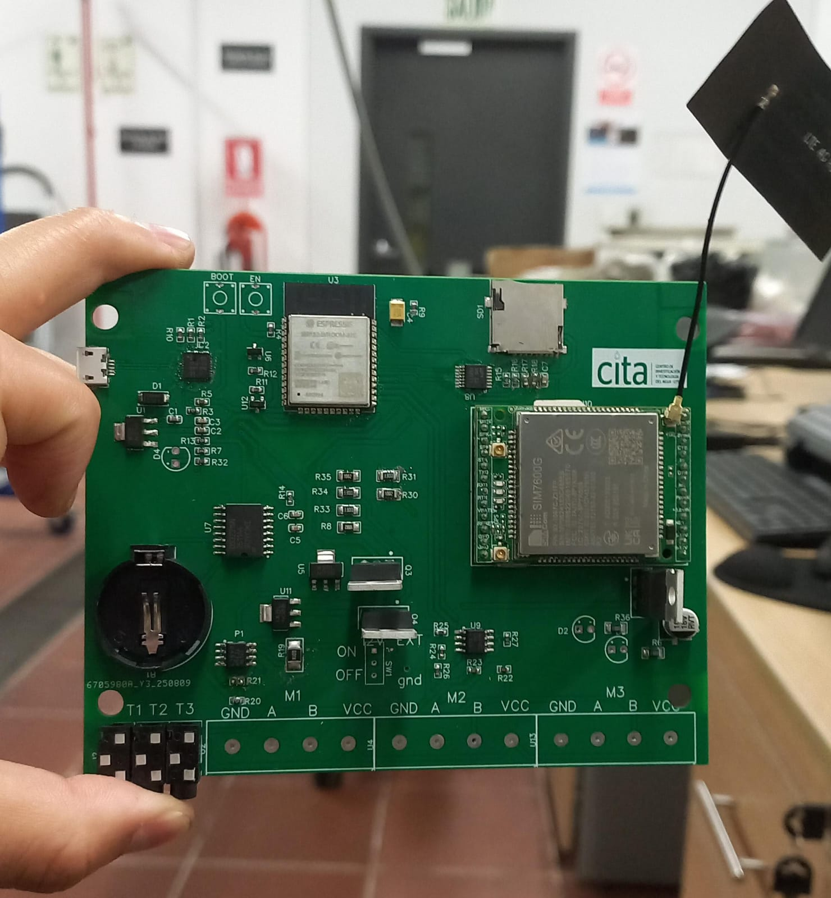

Sistemas Embebidos • CITA - UTEC
Tarjeta IoT Industrial de Telemetría 4G LTE
Diseño y ensamble de tarjeta de control para el Centro de Investigación y Tecnología del Agua (CITA). Integra microcontrolador ESP32-WROOM-32D, módulo celular SIM7600G para comunicación 4G LTE, conectores para sensores de campo y motores (T1-T3, M1-M3), zócalo microSD y batería RTC de respaldo.